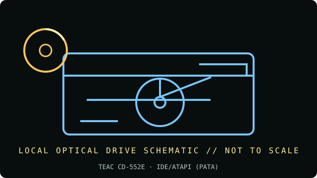

[ INDIVIDUAL COMPONENT // OPTICAL DRIVES ]
TEAC CD-552E
Internal IDE/ATAPI 52× CD-ROM drive with MultiRead support; read-only for CD recording. Specifications below are tied to the exact model identifiers and cited documentation; nearby product families may differ.

IDENTIFICATION: TEAC CD-552E · confirm full model/revision marking and compare it with the cited source before assigning a host or media capability.
Verified specifications
| Catalog subcategory | CD-ROM readers |
|---|---|
| Exact product identifier | TEAC CD-552E |
| Era / product type | Internal 52× CD-ROM, 2002 product documentation |
| Read/write and media | Maximum 52× CD-ROM read (7.8 MB/s); reads CD-R and CD-RW (MultiRead); 128 KB buffer; no CD writing. |
| Interface and mechanics | IDE/ATAPI (PATA); internal 5.25-inch half-height, motorized tray for 12 cm and 8 cm discs; 148.8 × 42.9 × 191.3 mm (5.86 × 1.69 × 7.53 in); horizontal or vertical mounting. |
| Variant and host cautions | The CD-552E specification sheet states IDE/ATAPI, but bezel colors and rear jumper configuration can vary. Match master/slave/Cable Select to the other device on a shared PATA channel; not SATA. |
Optical-media preservation notes
The sheet confirms CD-R/RW readability, not error-free recovery of every aged or unusual disc. For preservation images, log retries/errors and use checksums; avoid repeatedly spinning a disc with cracks or delamination.
- Handle discs by the edge or center hub; do not write on the data side or add adhesive labels over the recording surface.
- Store in a clean, cool, dry, dark environment in protective cases. Keep original media unmodified and make verified working images for access.
- Retain checksums, drive model/firmware, software, read errors, media type, and acquisition/handling history with each preservation image.
Identification and host checks
- Confirm the complete manufacturer label, model suffix, revision, serial/date code, and supplied bezel, cable, adapter, or bracket before installation.
- The CD-552E specification sheet states IDE/ATAPI, but bezel colors and rear jumper configuration can vary. Match master/slave/Cable Select to the other device on a shared PATA channel; not SATA.
- The sheet confirms CD-R/RW readability, not error-free recovery of every aged or unusual disc. For preservation images, log retries/errors and use checksums; avoid repeatedly spinning a disc with cracks or delamination.
Manufacturer, standards and preservation sources
- TEAC America — CD-552E specifications sheetModel-specific 52×, buffer, disc handling, IDE/ATAPI, mounting and dimensions.
- TEAC — CD-552E installation manualInstallation, jumpers, and host connection reference.
- Ecma International — ECMA-130 CD-ROM standardCD-ROM format reference.
- NIST — Care and handling of CDs and DVDs: Guide for librarians and archivistsPreservation practice for optical discs; follow applicable media-specific guidance and keep redundant verified copies.
- Library of Congress — Sustainability of Digital FormatsFormat-sustainability reference for planning access, preservation, and migration of digital content.
Manufacturer ratings describe supported media and maximum speeds, not guaranteed read quality from a particular aged disc. Standards and preservation guidance do not certify this drive or a media batch.